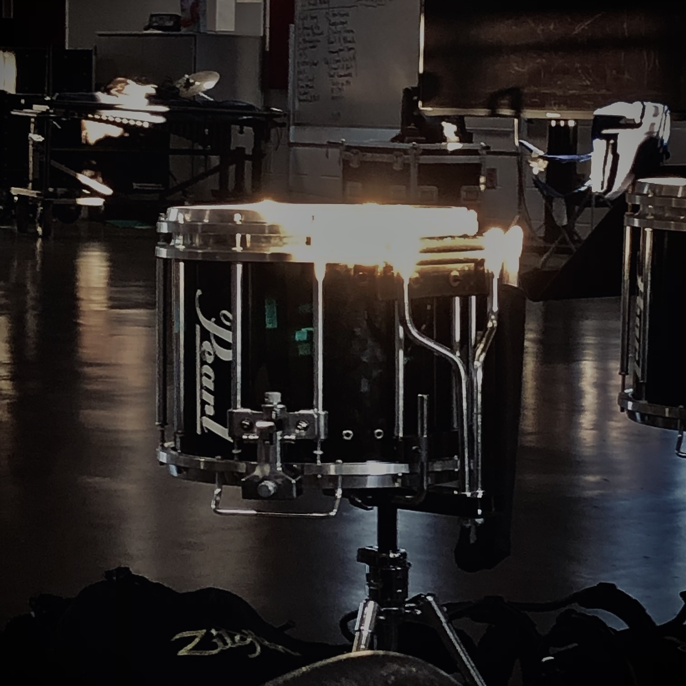
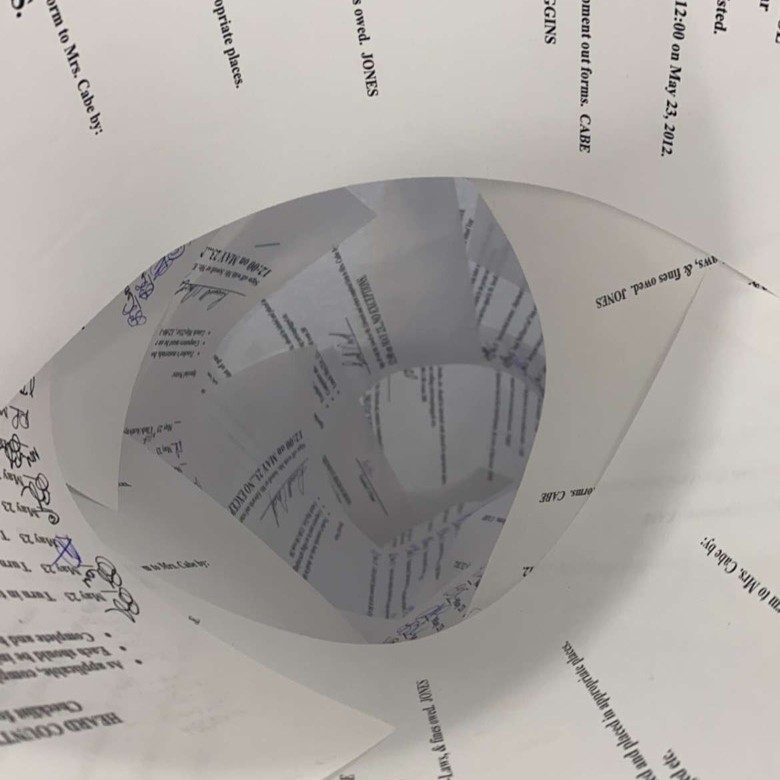
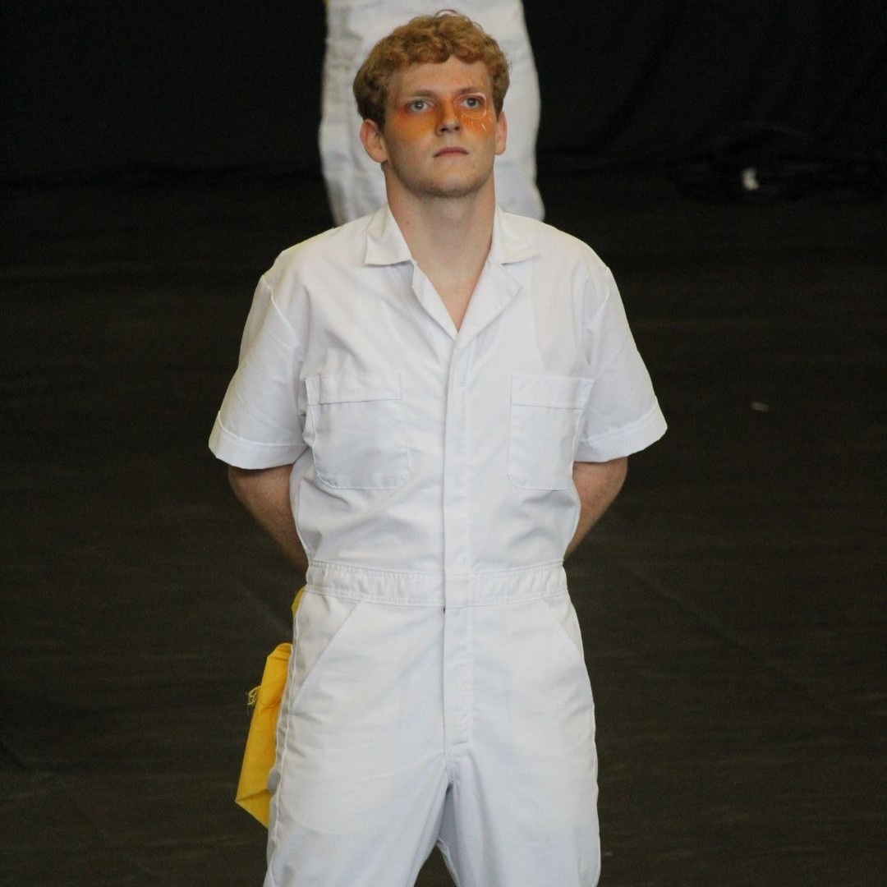

Learn
the way of rudimental drumming
Discover the teaching philosophies of Bryce Davis to learn more about rudimental drumming at any level! Explore accessible and simple guidance on the basics through a structured process created for you.
Resources
for further learning
Forget the endless searching for music, resources, or private lessons! Take advantage of our practical, compiled, and created resources to further your knowledge on percussional studies and rudimental drumming.


About
the creator
Got Questions? Gain answers through the author's biography discussing the self-developed website, his background, passions, teaching philosophy, and visions. Feel welcome to reach out to the author as well through the integrated query form!